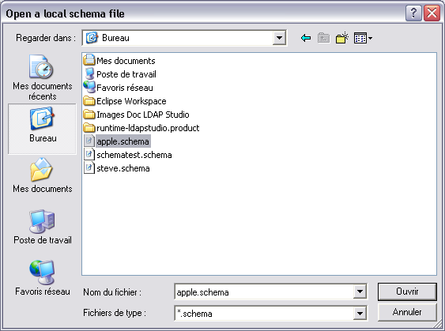

Opening a schema
In this section, you will learn how to open a schema file.
- In the Schemas view, click the Open a local schema file button in the toolbar, or select Open local schema file from the File menu.


- Browse the filesystem and select the schema file. Then click Open.
